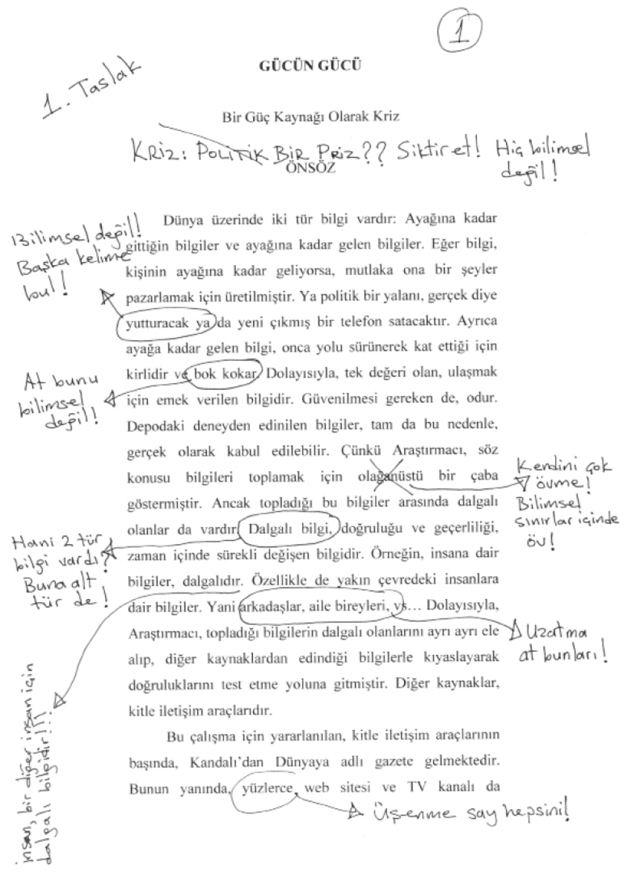
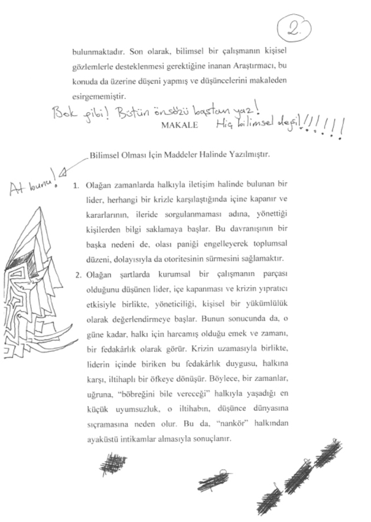
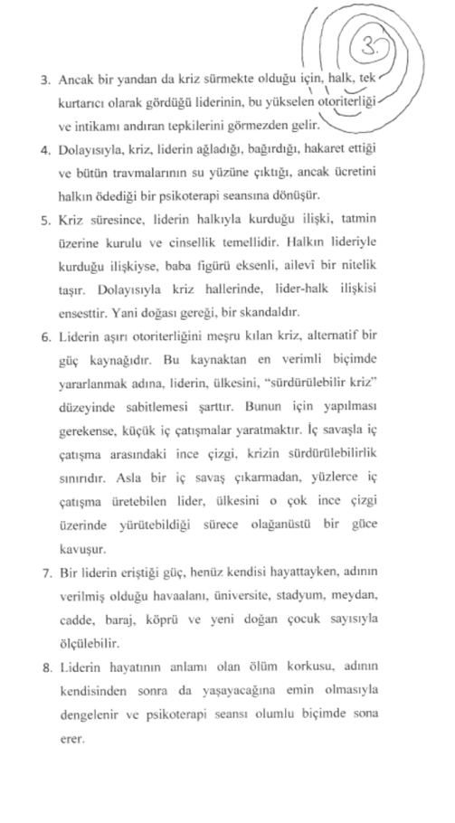
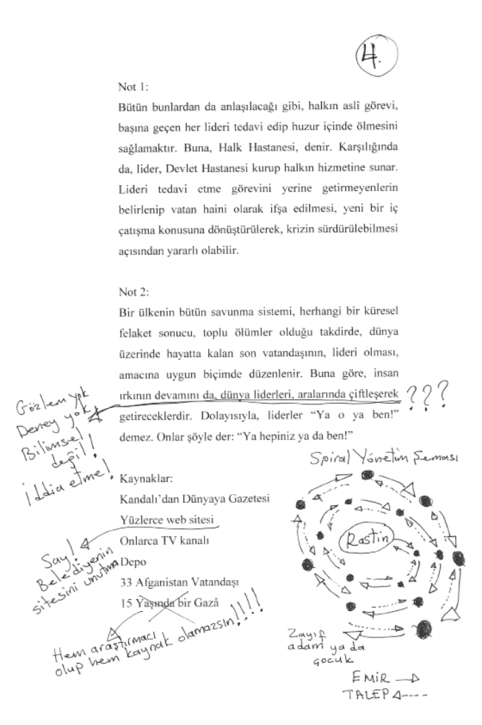

 


Çardakta oturmuş, düşünüyordum. Zayıf adamı gömdüğüm noktaya bakıyor ve bir ailesi var mıdır, diye soruyordum kendime. Her ne kadar yanıtını bilsem de! Çünkü öyle bir yerden çıkıp gelmişti ki en az 9 kardeşi, 6 çocuğu, 3 torunu ve 46 yeğeni olmalıydı. Dolayısıyla, annesiyle babasının artık yaşamıyor olduğunu varsaymak pek de bir işe yaramıyordu. İnsanların destelerce doğup düzinelerce öldüğü bir toprakta büyümüştü. Ve tek isteği, her insanın yalnız başına doğup yalnız başına öldüğü bir toprağa gitmekti. Ancak yolculuğu, Kandalı’da sona ermişti. Ve Kandalı’da insanlar, doğar doğmaz gömülürdü. En azından benim gibiler... Bazıları da ölü doğardı. Zayıf adam gibiler... Depo denilen rahimden ölüsü çıkmış ve çıktığı gibi de gömülüp gitmişti.
“Gazâ!”
Başımı çevirdiğimde, çardağa adım atan babamı gördüm.
“Konuştun mu, baba?”
“Hallettik, tamamdır. Parasını vereceğiz, konu kapanacak.”
Ne demem gerekiyordu? Tabii ki teşekkür etmeliydim! Tabii ki!
“Sağ ol baba.”
“Bir şey değil de... İki etti, oğlum! Sen ne istiyorsun bu Afganlardan?” deyip güldü. Yanlış duymamıştım. Tam da böyle söylemişti: Cuma’yla birlikte iki oldu! Ne dediğinin farkında bile değildi. Orospu çocuğu! Tek yapmam gereken, uzanıp ayağımın dibindeki küreği almaktı. Sonra da tek hamlede doğrulup yüzünü dağıtmak! Beni durduracak hiçbir şey ve hiç kimse yoktu! Küreğe uzanıyordum ki kulaklarım uğuldamaya başladı.
Yapma Gazâ! Bırak... Yapma.
Cuma?
Yapma!
Babamı, o an, o bahçede, o çardağın altında, hâlâ üzerinde ölü toprağı olan o kürekle öldürebilirdim. Ama yapmadım. Onun yerine, sadece yüzüne baktım. Depodaki kameralardan ekranıma kadar gelen görüntülere baktığım gibi. Hiçbir şey hissetmeden. Çünkü Ahad da oradaydı. Yerin altında ne varsa, orada. Ceset yiyen bütün böceklerin arasında. Zayıf adamı linç eden bütün Afganlarla birlikte. Hatta Rastin’le! Kadınlarını bana göndermiş kim varsa, hepsiyle! Baktım yüzüne. Anlasın diye. Yerin ne kadar dibinde olduğunu! Ama öyle bir ihtimal yoktu tabii. O sadece sırıtıyordu. Her nedense, öfkesi geçmişti. Belki de Aruz’dan iyi bir haber almıştı. Ama insan, Aruz’dan nasıl iyi haber alabilirdi ki? Müjdeci bir Azrail var mıydı?
“Yarın, sabahtan Derç’e gidiyoruz. Mal gelecek. 200 kelle! Hadi yine iyisin! Maaşından kesmeye gerek kalmadı. Ulan, ne bereketli kışmış be!”
Anlaşılmıştı! 200 kelle silip süpürmüştü her şeyi. Ne zayıf adam kalmıştı ne de bahçedeki cesedi. Üzerimizi örtmeye, tam 200 kelle talaş gelecekti. Mutlu olmalıydık, değil mi?
“Asma suratını, hadi! Olmuş bir kere! Siktir et!”
Tam gidiyordu ki durdu.
“Bak, ne diyeceğim! Gece gidiyor bunlar.”
Bunlar, derken, zayıf adamı gömdüğüm yeri göstermiş sonra da devamını getirmişti.
“Çıkıyoruz yola. En geç 11’de, sok hepsini dorseye. Yarım gibi de çıkarız.”
“Peki, baba” dedim. Sonra da çevirdim başımı. Parmağıyla gösterdiği yere daha fazla bakmamak için...
Demek, Rastinlerin yola çıkma zamanı gelmişti... Peki, ama nasıl olacaktı? Tırdan kamyona geçerken ya da kasadan depoya inerken mutlaka yüzünü görmüşlerdi babamın. Gece de kamyondan inip teknelere geçerken yeniden görecek ve kesin hatırlayacaklardı. Bu konuda yapabileceğim hiçbir şey yoktu. Aslında daha önemlisi, beni görünce ne yapacaklardı? Deponun kapağını açıp da önümden teker teker geçip kasaya binerken... Günlerdir hayatlarını bir cehenneme çevirmiş olan deli çocuğun yanından, hiçbir şey olmamış gibi geçip gitmeleri mümkün müydü? Ya Rastin? Sonunda böbreğini vereceği bir yolculuğa çıkmak isteyecek miydi? Belki de evden kaçmanın tam sırasıydı! Her şeyi olduğu gibi bırakıp siktir olup gitmenin tam zamanı! Ama yapamadım tabii... Onun yerine, hangara gidip monitörle mikrofonu açtım. Bir süreliğine depo ülkesini izledim. Her zamanki gibi oturmuş ve kendi aralarında tartışan depo halkını ve hiçbir şeyi umursamadan elindeki kitabı karıştıran liderlerini izledim.
“Rastin! Bu gece gidiyorsunuz!”
Bu haberi almak için iki haftadan fazla beklemişti. Ancak hiç de heyecanlanmış gibi görünmüyordu. Tek yaptığı, elindeki kitabı kapatıp, oturduğu yerden, karşısındaki kameraya bakmak oldu.
“Rastin, gidiyorsunuz! Akşam 10’da kapağı açacağım. Sonra da kamyona geçeceksiniz. Yarım gibi de yola çıkacaksınız.”
Rastin, bir refleks olarak, başını, duvardaki saate çevirdi.
“Ona bakma, o bozuk.”
“Ben biliyor!”
“Efendim?”
“Saat çok yavaş! Bozuk!”
Demek anlamıştı... Her neyse, hiçbir önemi yoktu.
“Sen yalan söylüyor!”
“Ne diyorsun Rastin?”
“Sen gerçek deli!”
“Rastin saçmalama, gidiyorsunuz, diyorum. Nasıl yapacağız şimdi? Babamı görecekler. Ölmediğini anlayacaklar!”
“Sen, dedi, saat doğru. Ama yanlış. Sen yalan söylüyor!”
Neden saatten bahsediyordu şimdi? Evet, depodakilerin kol saatlerini toplamış ve onları o duvar saatiyle yalnız bırakmıştım ama kimin umurundaydı?
“Tamam, peki, yalan söyledim! Kabul! Saat bozuk! Oldu mu? Ne yapacağız şimdi, onu söyle!”
“Akşam gel. Kapak aç.”
“Ne diyeceksin peki yanındakilere?”
“Böbrek!”
“Ne?”
“Ben böbrek vermiyor, diyecek. O kadar. Çünkü sen yalancı.”
“Nereden çıktı şimdi?”
“Ben düşünüyor... Adamlar böbrek istiyor, organ istiyor. Burada adam ölüyor, kimse gelmiyor. Sen haber vermiyor! Yani kimse böbrek istemiyor. Kimse 2.000 dolar istemiyor. Sen yalancı! Neden? Neden Gazâ?.. Söyleme, boş ver... Çünkü ben de yalancı, Gazâ. Ben, senden kötü. Çünkü istedim, adam ölsün. İstedim, bunlar onu öldürsün. Onun böbrek alıyor siz. Benim böbrek kalıyor... Ama kimse gelmedi... Anladı? Ama sır olsun bu. Sen, ben, arada sır! Kimse söyleme. Ben de seni söylemem.”
Ve ağlamaya başladım. Birden! Depodakiler, önce birbirlerine sonra da sanki beni görebileceklermiş gibi kameralara baktı. Hıçkırıklarım bir duvardan diğerine yankılanıyor olmalıydı. Ağlamamla dolmuş bir depo! Bir kriz gibi başlamıştı her şey. Kalp krizi gibi! Ama ağladıkça kriz geçti. Hatta kendimi dışarıdan izlemeye bile başladım. Ağlayan Gazâ’yı izleyen Gazâ! Dolayısıyla, belki istesem, sakinleşebilirdim. Ama bu defa da, ağlamam sona ererse, konuşmak zorunda kalacağımı bildiğim için duramadım. Çünkü Rastin’e bir yanıt vermem gerekiyordu. Ama o yanıtı nerede bulacağımı bilmiyordum. İçim bomboştu. Hiçbir şeyin yanıtı yoktu bende. Ama hiçbir şeyin! Belki biraz zorlasam, zayıf adamın ölümünden çok geç haberim olduğu için böbreğinin alınmasının mümkün olmadığını ya da buna benzer teknik nedenler sıralayabilirdim. Hatta tıbbi olarak gerçekten de haklı çıkardım. Ama artık yalan söyleyerek haklı çıkmaktan bıkmıştım! Söyleyecek tek bir yalanım bile kalmamıştı. Olanları da söyleyecek gücüm yoktu. Ama görünen o ki Rastin benden güçlüydü. Zayıf adamın ölmesine göz yumduğunu itiraf edecek kadar güçlü ve kendi böbreği alınmasın diye başka birinin ölmesini isteyecek kadar zayıf... Söylenecek hiçbir şey yoktu... Rastin de ben de, bitmiştik! Depo, sonumuz olmuştu.
“Tamam!” dedi Rastin. “Tamam... Akşam gel. Kapak aç. Sonra git. Biz girer kamyon. Sen gelir. Baba mühim değil. Kimse bakmaz...”
İki hece çıkabildi dudaklarımın arasından.
“Peki...”
Tam kalkıp gidecektim ki yine duydum Rastin’i.
“Bana bir şey söyle Gazâ!”
“Ne?”
Ağzında biriktirdiği o üç soruyu yüzüme fırlattı. Aramızdaki onca betona rağmen bunu denedi.
“Adamlar para istemiyor, değil mi? Benim böbrek kalıyor? Ben, doğru tahmin?”
Ağzımı açtım ama... Yemin ediyorum, ben konuşmadım:
“Hayır, Rastin. Yunanistan’a gidince, alacaklar böbreğini! Kusura bakma!”
“Yalancı!” diye bağırdı. “Neden ağlıyor sen o zaman?”
Bu defa konuşan bendim. Tam bir konuşma değildi ama ses benimdi.
“Korkma, sönmez bu şafaklarda yüzen al sancak...”
Ve biri bana eşlik etmeye başladı: Depodaki çocuk! Alkışlıyor, gülüyor ve bazen mırıldanıp bazen de bağırıyordu. Sonra başka biri katıldı koromuza: Rastin adında bir lider. Ama onun ağzından hep aynı kelime çıkıyordu:
“Yalancı!”
Tek kelimeyle de çok uzun cümleler kurulabileceğini, ses telleri burnundan çıkacak kadar bağırarak kanıtladı:
“Yalancı! Yalancı! Yalancı!”
Hatta o kızgınlıkla, eline geçen demir kovayı savurup kameralardan birini bile kırdı. Kendini öylesine kaybetmişti ki, kovanın dolu olabileceği aklının ucundan bile geçmemişti. Oysa deponun tek çocuğu daha yeni üzerinden kalkmıştı. Ama zaten artık çok geçti. Çünkü bok fıskiyesi çoktan çalışmış ve insanlarla duvarları, çığlık kadar bir sürede tarayıp lekelemişti. Artık yüzlere giden bütün eller kirlenip de dönüyor ama Rastin, bir saniye önce üzerlerine ne yağdığını çözemiyordu. Olduğu yerde, nefes nefese, bir sağa, bir sola dönüyor, yine de bir kova gerçeği göremiyordu. Oysa her şey, burnunun dibindeydi. Gözlük camlarındaki kahverengi noktalarda! Üç nefes alıp kendine gelse, aradığını elbet bulurdu, çünkü zaten nereye baksa onu görüyordu: Bok...
Çocuk da ben de bütün bunları umursamadık. Ve İstiklâl Marşı’yla açtığım depo ülkesini İstiklâl Marşı’yla kapattık.